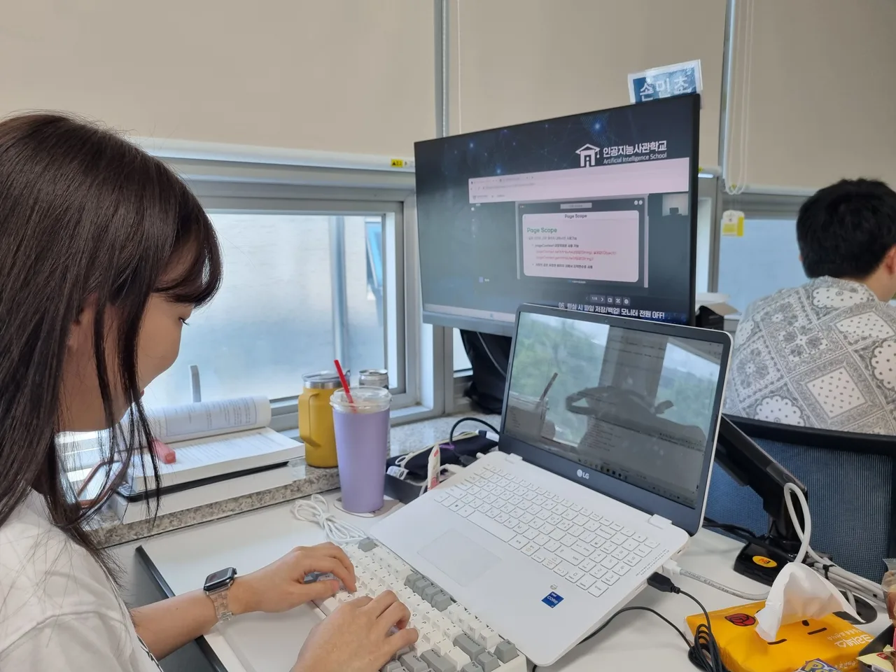
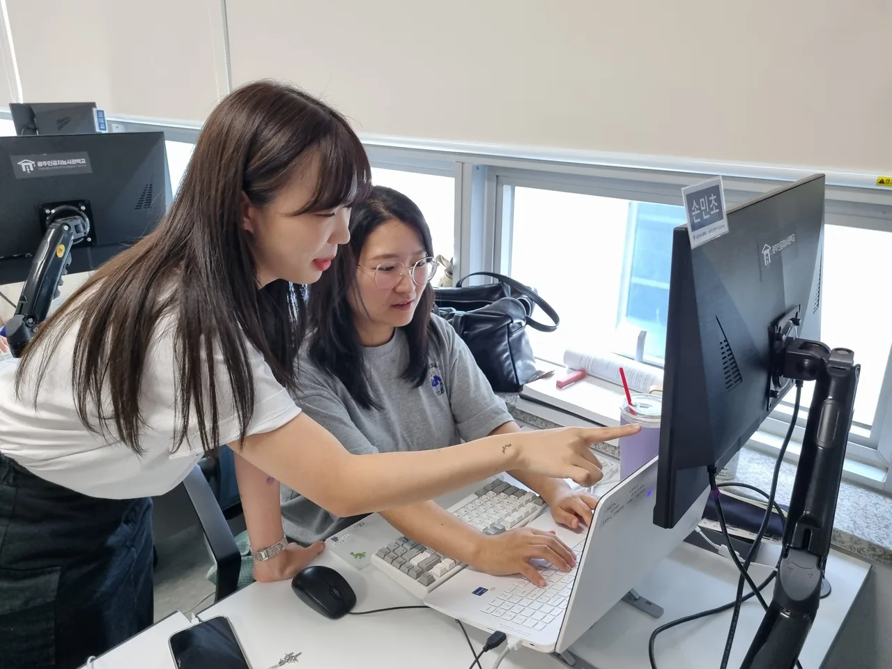
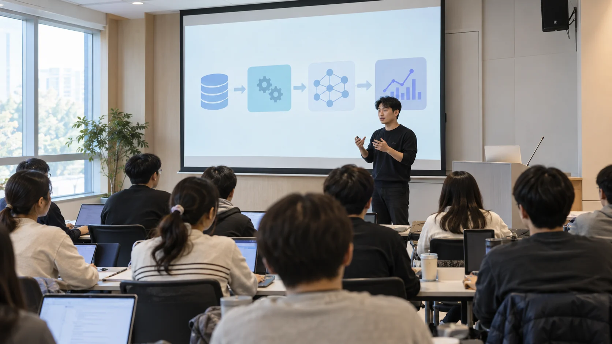

체계적인 학습 관리
수도권·광주 교육기관의 교육 경험을 바탕으로, 스마트 교육 플랫폼에서 학습 과정을 차근차근 관리해요.
무엇을 배우고, 누구와 만들고,
어떤 일을 준비하는지. 차근차근 알아봐요.

학교의 하루 / 4기 기록수업, 그리고 활동↗인사교는 AI를 배우고 직접 만들어 보고 싶은 청년을 위한 학교예요.
AI 기초부터 모델링, 서비스 개발, 플랫폼·인프라까지 배우고,
직무·산업별 수업에서 배운 기술을 어떻게 쓰는지 익혀요.
팀원들과 아이디어를 나누고, 기업 실무자의 피드백을 받으며
실제로 작동하는 서비스를 만들어 봐요.
프로젝트 경험을 쌓고, 취업·창업 준비도 함께해요.
 인사교 교육 현장
인사교 교육 현장수도권·광주 교육기관의 교육 경험을 바탕으로, 스마트 교육 플랫폼에서 학습 과정을 차근차근 관리해요.

팀원들과 의견을 나누고 직접 실습해요. 배운 내용은 발표하면서 정리해 봐요.

여러 산업의 문제에 AI를 적용해 봐요. 어떤 문제를 풀지 정하고, 직접 기획하고 만들어 봐요.

AI 교육 · 프로젝트 · 취업 지원

AI 선도기업의
실무 기술과 경험

AI와 클라우드를
연결하는 기술
쌓아 온 교육 경험과
취업 지원 노하우

AI·SW 산업의
경험과 네트워크
전국 어디에서든 지원할 수 있어요.
전공과 학력에 제한이 없어요.
기업의 문제를 AI로 풀고, 직접 만든 프로젝트로 다음 도전을 준비해요.
막히는 부분은 멘토에게 물어보고, 피드백으로 다듬어요. 현장에서 쓰는 기술과 경험을 프로젝트에 더해 봐요.

코드 템플릿부터 구현 기술과 시연 영상까지. 주제와 데이터에 맞는 자료를 찾아 개발에 참고해요.
최신 채용공고와 현장 수요를 반영해,
지금 기업에서 필요한 기술을 배워요.
AI 서비스를 기획하고, 직접 만들고 발표하는 과정을 함께 배워요.
기술의 한계 · 해결할 문제
페르소나 · PRD · 핵심 기능
Figma · 와이어프레임
OpenAI · Claude
Streamlit · 웹 대시보드
Bubble · AI 코딩 도구
린 캔버스 · 수익 구조
데이터 확보 · ROI
기획 · 개발 · 사업 모델
세 가지 공통 교과목에서 배우는 내용을 아홉 가지 주제로 나눠 봤어요.
자료: 인공지능사관학교 7기 모집 설명회, 12~13쪽. 공통 교과목은 자료의 ‘전공필수 교육(80시간)’을 바탕으로 정리했어요. 교과목과 일정은 기수별로 달라질 수 있어요.
3월부터 12월까지,
온라인으로 기초를 배우고,
팀 프로젝트까지 함께해요.
온라인 VOD로 AI 기초를 배워요. 본격적인 수업에 앞서 필요한 기초를 차근차근 익혀요.
주강사·보조강사
공통 수업을 듣고, 선택한 직군과 산업 분야에 맞는 내용을 더 배워요.
주강사·보조강사
기업 연계·창업·실증 프로젝트 중 하나를 선택해 팀과 함께해요. 현직 멘토의 피드백을 받으며, 산업 현장에 AI를 적용하는 AX 프로젝트를 만들어 봐요.
현직 멘토
자료: 인공지능사관학교 7기 모집 설명회, 11~12쪽. 공통 교과목 80시간은 성장과정 480시간에 포함돼요. 교육 시간과 일정은 기수별로 달라질 수 있어요.
2026년 7기 · 평일 대면 교육 기준
학교에 오는 날의 기본 시간표
학교에 도착하면 그날 배울 내용과 준비할 것을 확인하고 수업을 시작해요.
시간표에 맞춰 이론을 배우거나 실습해요. 궁금한 건 강사에게 물어보면서 정리해 봐요.
점심을 먹고 잠깐 쉬어 가요. 오후 수업은 13시에 시작해요.
수업과 실습을 이어가요. 교육과정에 따라 팀 활동이나 프로젝트도 함께해요.
오늘 배운 내용과 할 일을 정리하고 집으로 돌아가요.
이론으로 배운 내용을 실습으로 써 보고, 토론·팀 활동·발표로 정리해요. AI 기업·교육기관·산업협회가 교육에 참여하고, 기업 실무자와 교수·연구진에게 프로젝트 지도와 멘토링을 받아요.
수업 시간은 7기 모집 설명회 31쪽, 점심시간은 제공된 운영 안내를 기준으로 정리했어요. AI 준비과정은 온라인 VOD로 배워요. 오전·오후 수업 내용과 세부 일정은 교육과정별 시간표에 따라 달라질 수 있어요.
광주 인공지능사관학교에서 AI로 일할 준비를 해요. 기초부터 기업에서 필요한 기술까지 배우고, 팀원들과 서비스를 직접 만들어 봐요.
수준과 학습 목표에 맞춰
기초부터 최신 기술까지.
역할을 나누고 문제를 풀며
팀 프로젝트를 완성해요.
데이터센터의 GPU·컴퓨팅 자원과 실증 데이터를 배울 때 활용해요.
1:1 컨설팅과 기업 모의 면접, 채용박람회로 취업·창업 준비도 함께해요.
수업에서 궁금했던 이야기,
현장에서 일하는 사람에게 들어봐요.

SPECIAL LECTURE 특강AI가 실제 서비스에 어떻게 쓰이는지 현직자에게 들어봐요. 개발하며 겪은 시행착오부터 일하는 방식까지, 수업만으로는 알기 어려웠던 이야기를 나눠요.
소개 문구와 주제는 시안용 예시예요. 실제 특강 내용과 대표 사진으로 바꿀 예정이에요.
희망 직무·커리어 방향
이력서·포트폴리오·면접
기업 매칭·채용박람회
상담·후속 프로그램
AI·IT 전문 컨설턴트와 어떤 일을 하고 싶은지 이야기하고, 지원할 직무에 맞춰 준비해요. 수료 후에도 필요한 상담과 후속 프로그램을 안내받을 수 있어요.
AX 인턴십 프로그램
AI 특화 창업 프로그램
AI·IT 전문 컨설턴트와 취업·창업 방향을 함께 정해요. 이력서와 포트폴리오를 점검하고, 지원할 직무에 맞춰 면접도 준비할 수 있어요.
AI·IT 기업의 채용공고를 직무별로 모아서 볼 수 있어요. 정기적으로 새 채용정보를 추가하고, 기업과 직무에 관한 정보도 함께 안내해요.
어떤 일을 하고 싶은지, 어떤 기술을 익혔는지 함께 살펴보고 채용 중인 기업에 추천해요. 지역기업을 포함한 수시 채용과 면접 기회를 안내받을 수 있어요.
AI 기업의 채용 부스에서 담당자를 만나고 궁금한 직무 이야기를 물어봐요. 포트폴리오와 면접 준비를 돕고, 현장 면접 후에도 기업 매칭을 이어가요.
취·창업 세미나에 참여하고, AI 모의 면접으로 답변을 연습해 봐요. 취·창업 라운지와 준비 공간도 이용할 수 있어요.
수료 후에도 취업·창업 준비가 어떻게 되어 가는지 함께 확인해요. 필요한 상담과 후속 프로그램을 안내하고, 수료생의 의견과 지원 결과를 프로그램에 반영해요.